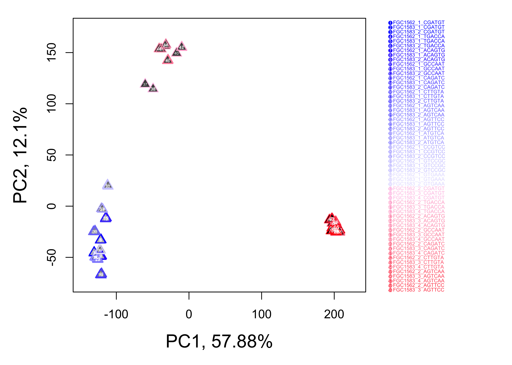
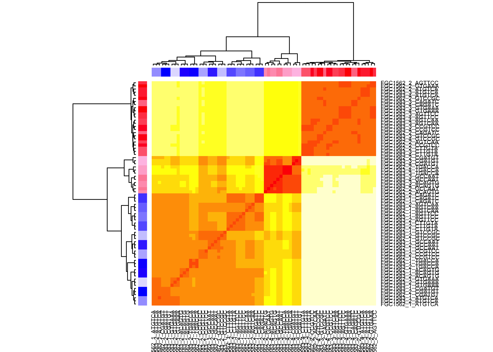
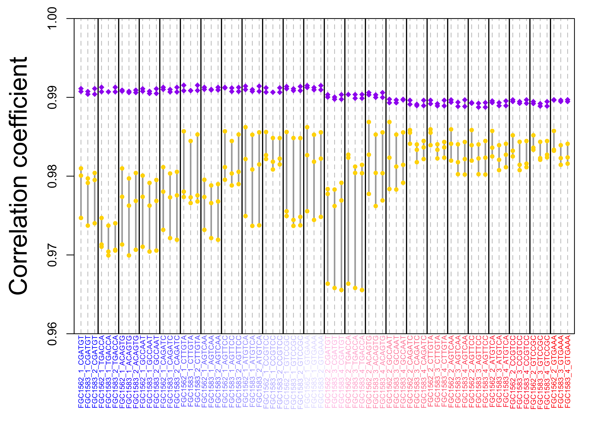
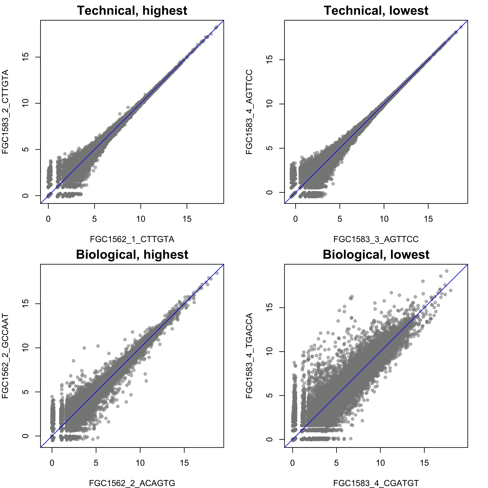

Introduction This procedure uses high-dimentional data (transcriptome, proteome, …) to evaluate how similar techinal replicates are to each other comparing to biological replicates. Technical replicates can be defined by the experiment design at different stages, from multiple cell culture colonies from the same donor to the same RNA-seq library sequenced by multiple flowcells. The inputs of this procedure include a data matrix and a matching table of sample manifest.
RNA-seq libraries sequenced on different flowcells.
A total of 24 RNA-seq libraries were created in 6 tissue/treatment groups and each library was sequenced on 3 flowcells/lanes.
Similarity between technical replicates was compared to similarity between biological and techincal replicates.
Click here to view full sample manifest.
Figure 1. Hierarchical structure of sample groups, biological replicates, and technical replications.
Principal Components Analysis (PCA) is an unsupervised analysis that converts a large number of correlated variables into a smaller set of uncorrelated variables called principal components (PCs). Each principal component accounts for certain percentage of total variability of a data set so the PCs can be ordered by their percentages. In general, samples closer to each other within the PCA space are more similar to each other.

Figure 2. This figure plots the top two PCs that account for 69.98% of the total variance of the data matrix. Techincal replicates of the same biological sample have the same border color and biological replicates of the same sample group have the same filled color.
Another way to measure sample similarity is calculate the pairwise correlation between any 2 samples. Unsupervised clustering of all samples can be performed using the pairwise correlation coefficients. More similar samples have the higher correlation coefficient and share the lower node on the clustering tree.

Figure 3. This figure color-coded the correlation between all pairs of samples. Redder blocks represent higher correlation coefficients. Samples are clustered and ordered in rows and columns. Technical replicates of the same biological samples have the same row/column sidebar color. Click here to view correlation coefficients between all pairs of samples.
We usually expect that technical replicates of the same biological sample have more similarity to each other than biological replicates to each other. Pairwise correlation coefficients between different types of replications are compared in this analysis.

Figure 4. For each technical replicate, this figure compares its correlation to the other technical replicates of the sample and the other biological replicates in the same sample group (batch effect removed) on a vertical line. The purple diamonds are correlation coefficients between pairwises of technical replications and the yellow circles are correlation coefficients between pairwises of biological replications. Usually, it is expected that the later have lower values.

Figure 5. Pairs of technical or biological replicates having the highest or lowest correlation.
## R version 3.2.2 (2015-08-14)
## Platform: x86_64-apple-darwin13.4.0 (64-bit)
## Running under: OS X 10.10.5 (Yosemite)
##
## locale:
## [1] en_US.UTF-8/en_US.UTF-8/en_US.UTF-8/C/en_US.UTF-8/en_US.UTF-8
##
## attached base packages:
## [1] stats graphics grDevices utils datasets methods base
##
## other attached packages:
## [1] networkD3_0.4 data.tree_0.7.0 gplots_3.0.1
## [4] awsomics_0.0.0.9000 htmlwidgets_0.8 DT_0.2
## [7] yaml_2.1.13 knitr_1.14 rmarkdown_1.3
## [10] RoCA_0.0.0.9000 RCurl_1.95-4.8 bitops_1.0-6
## [13] devtools_1.12.0
##
## loaded via a namespace (and not attached):
## [1] Rcpp_0.12.10 highr_0.6 influenceR_0.1.0
## [4] formatR_1.4 RColorBrewer_1.1-2 plyr_1.8.4
## [7] viridis_0.4.0 tools_3.2.2 digest_0.6.12
## [10] jsonlite_1.0 tibble_1.3.3 evaluate_0.9
## [13] memoise_1.1.0 gtable_0.2.0 viridisLite_0.2.0
## [16] rgexf_0.15.3 rlang_0.1.1 igraph_1.0.1
## [19] rstudioapi_0.6 DBI_0.6-1 gridExtra_2.2.1
## [22] withr_1.0.2 DiagrammeR_0.9.0 stringr_1.2.0
## [25] dplyr_0.5.0 gtools_3.5.0 caTools_1.17.1
## [28] rprojroot_1.2 grid_3.2.2 R6_2.1.2
## [31] Rook_1.1-1 XML_3.98-1.4 gdata_2.17.0
## [34] ggplot2_2.1.0 magrittr_1.5 backports_1.1.0
## [37] scales_0.4.1 htmltools_0.3.5 rsconnect_0.4.3
## [40] assertthat_0.1 colorspace_1.2-6 brew_1.0-6
## [43] KernSmooth_2.23-15 stringi_1.1.1 visNetwork_2.0.0
## [46] munsell_0.4.3END OF DOCUMENT